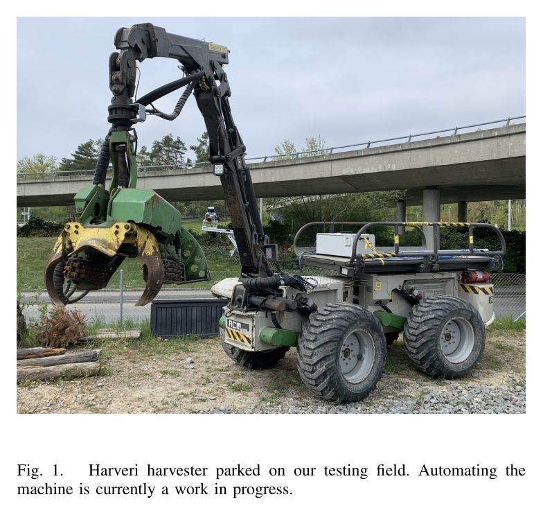
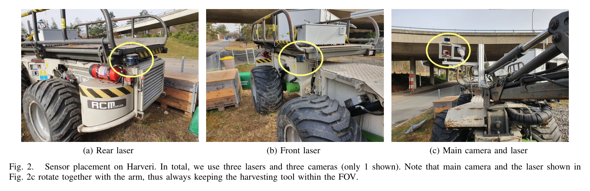
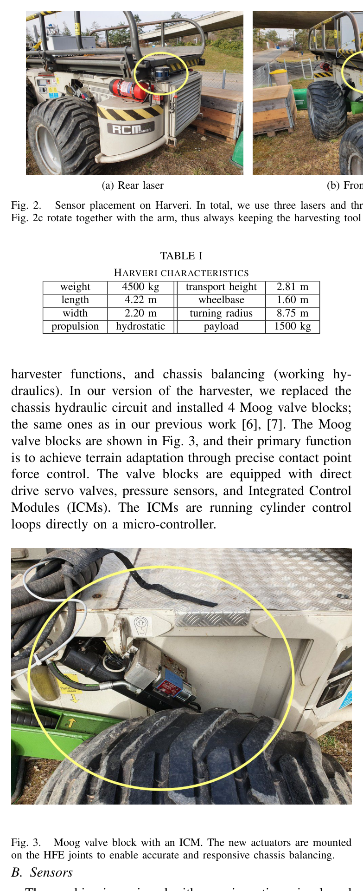
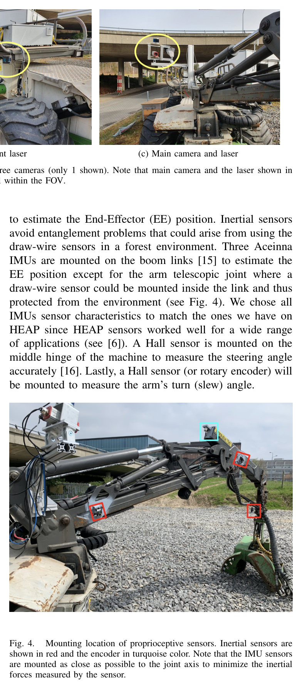
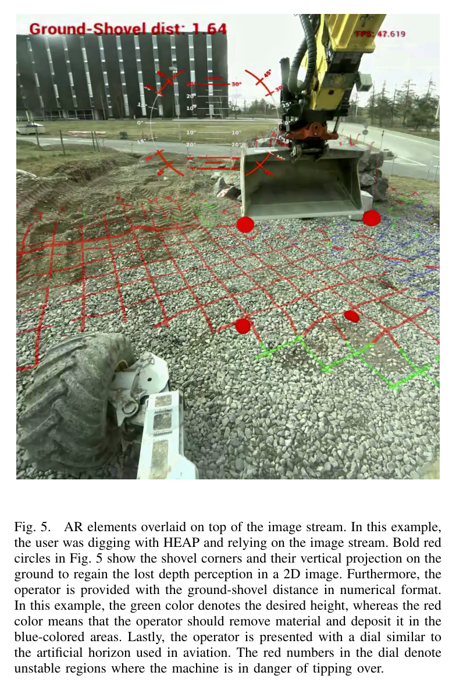
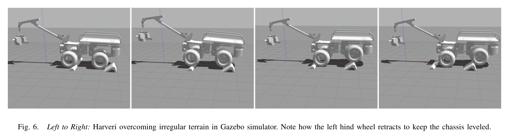
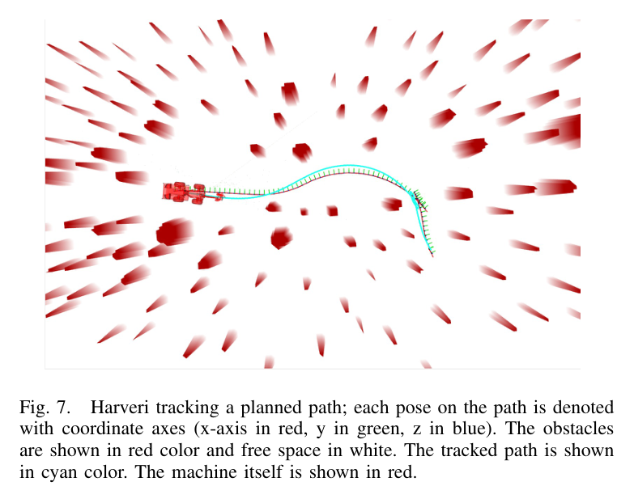
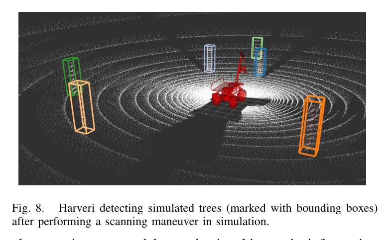
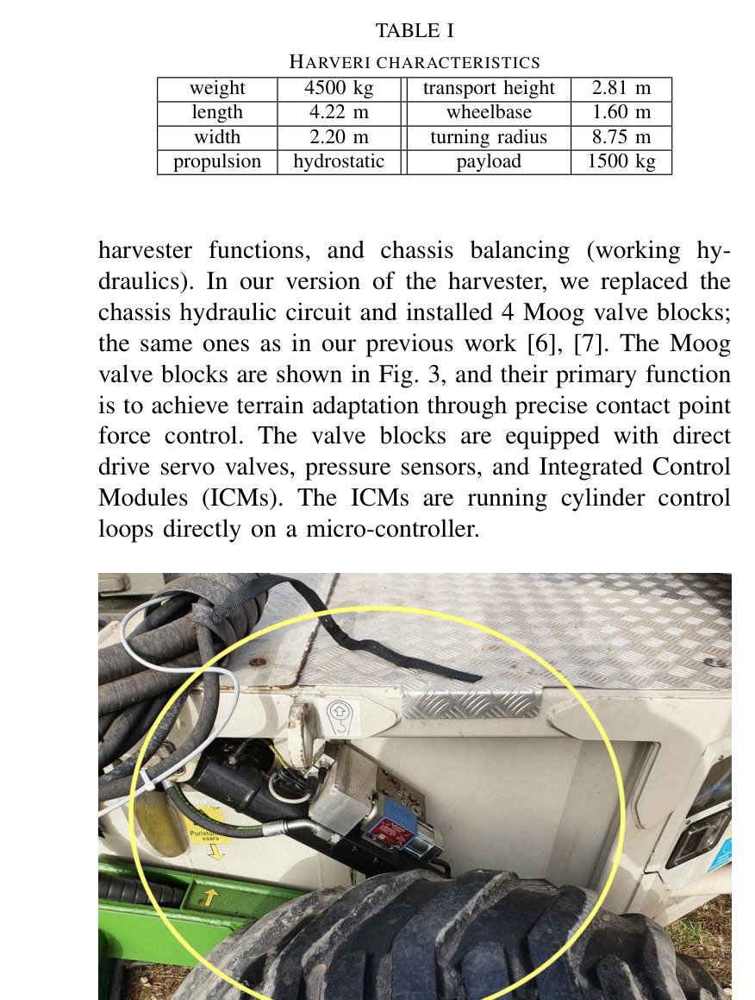

Harveri: a small (semi-)autonomous precision tree harvester
한줄 요약 — 최대 30 cm 나무를 다루는 소형 Harveri에 3 LiDAR·3 카메라·4 arm IMU/encoder, Moog servo valve와 ROS 컴퓨팅을 통합하고 HEAP의 균형·RRT 항법·tree detection을 포팅해 원격조작에서 완전자율 간벌로 이어지는 연구 플랫폼을 제시한 시스템 논문이다.
1.연구 배경 및 동기
산림 바닥 손상을 줄이는 소형 정밀 간벌기의 단계적 자율화
산림은 세계 육지의 약 30%를 덮고 기후 대응에 중요하지만, 로봇 연구는 주로 산림 inventory 작성에 집중했고 실제 나무와 상호작용하는 벌목 기계는 드물었다. 특히 first thinning과 energy wood harvesting은 나무 사이가 좁고 보존할 수목과 제거할 수목이 섞여 있어 대형 장비의 접근과 지반 손상이 문제가 된다. Harveri는 이런 틈새를 겨냥한 소형 무선조종 harvester를 센서·계산·전기유압 제어가 가능한 연구 플랫폼으로 바꾸는 작업이다.
개발 전략은 두 단계다. 먼저 사람이 원격으로 운전하되 automatic trunk grasping 같은 부분 자율 기능과 AR 보조를 제공해 현장 적용과 상용화를 앞당긴다. 이후 HEAP에서 이미 검증한 차체 균형, 주행·접근 자세 계획, arm 제어, 상태추정, mapping·localization을 Harveri 기구에 맞게 옮겨 완전 무인 간벌을 목표로 한다. 원격운전은 한 작업자가 가정이나 안전한 장소에서 여러 장비를 감독할 수 있어 숙련 인력 부족을 완화하는 중간 단계이기도 하다.
논문은 완성된 자율 벌목 성능 보고서가 아니라 플랫폼 설계와 진행도 보고다. 대부분의 자율 기능은 Gazebo 근거이며 실산림 정량 성능은 없다.

원문 Figure 1 · PDF p.2 — Fig. 1. Harveri harvester parked on our testing field. Automating the machine is currently a work in progress.
선행 연구의 한계
기존 산림 로봇은 inventory·mapping 비중이 높고, 저자들이 조사한 범위에서 HEAP 외에 자율 또는 원격 tree harvesting 시스템의 출판 근거가 거의 없다.
HEAP는 벌목 자율 기능을 보였지만 대형 보행 굴착기라 좁은 간벌 구역과 forest floor 손상 최소화라는 요구에 최적화된 플랫폼이 아니다.
산림 canopy 아래에서는 GPS가 불안정하고, 기존 HEAP precision harvesting은 사람이 미리 forest plot을 mapping해야 했다.
일반 2D 영상 원격조작은 깊이감·지면-도구 거리·전복 위험을 작업자에게 충분히 전달하지 못하며, 4G/5G 가용성도 숲 전체에서 보장되지 않는다.
이 연구의 기여
최대 벌목 직경 30 cm의 4.5 t Harveri를 전기유압 자동제어가 가능한 소형 정밀 벌목 플랫폼으로 개조하고 주요 기계 사양을 공개했다.
occlusion redundancy와 tool view를 고려해 세 LiDAR, 세 카메라 계획, chassis·boom proprioception sensor의 종류와 배치를 구체적으로 설계했다.
PLC·embedded GPU PC·CAN·ROS 1/2·4G/5G 영상 전송을 하나의 teleoperation/autonomy computing architecture로 통합했다.
HEAP의 chassis balancing, RRT 기반 base planning, pure pursuit, hierarchical IK, factor-graph state estimation, geometric tree detection 모듈을 Harveri용 Gazebo에 포팅하고 필요한 차이를 정리했다.
2.방법론 및 시스템 구성
기계는 Oy RCM Harvester LTD의 굴절식 Harveri다. 주행용과 boom·harvester·chassis balancing용 두 hydraulic circuit를 가지며, 저자들은 chassis circuit를 교체하고 HEAP와 같은 네 Moog valve block을 설치했다. direct-drive servo valve, pressure sensor, ICM의 cylinder loop가 접지력과 차체 수평을 위한 정밀 contact force control을 가능하게 한다.
센서 설계는 자기상태, 주변 지도, 작업자 시야를 분리한다. chassis SBG Ellipse-A IMU가 roll/pitch를 제공하고, boom link의 세 Aceinna IMU와 telescope 내부 draw-wire sensor가 end-effector 위치를 추정한다. 중앙 articulation과 arm slew는 Hall sensor 또는 rotary encoder로 측정한다. 두 Velodyne Puck는 기계 양끝에 배치해 localization 시야와 가림 redundancy를 만들고, arm 가까이의 Hesai QT64는 104.2° FOV로 local grasp map과 camera-depth 중첩을 지원한다.
공통 elevation map은 teleoperation AR와 autonomy가 공유한다. behavior tree 아래 virtual-force balancing, RRT·pure pursuit, IK, factor graph, ICP localization, tree detection을 연결한다.
처리 파이프라인
1
전기유압 retrofit
기존 chassis hydraulic circuit를 네 Moog servo valve block과 ICM으로 바꾸고 PLC·embedded PC에서 CAN과 전용 interface로 valve를 제어한다. 차체 접촉력을 빠르게 제어할 기반을 만든다.
2
자기상태 계측
chassis IMU, boom link 세 IMU, 보호된 telescope draw-wire, articulation·slew Hall sensor를 결합해 차체 자세와 end-effector kinematics를 얻는다. IMU는 숲속 cable entanglement를 피하도록 joint axis 가까이에 둔다.
3
중복 외부인지
앞·뒤 Velodyne Puck로 localization FOV를 넓히고, arm base의 Hesai QT64와 crane camera를 함께 회전시켜 harvesting tool이 항상 시야 중앙에 오도록 한다. 향후 visual navigation과 traversability도 같은 camera를 사용한다.
4
원격조작 영상·AR
RTX GPU가 세 영상 stream을 hardware encode하고 4G/5G로 전송한다. elevation map과 kinematics를 영상에 투영해 깊이·절성토·stability 정보를 보강한다.
5
HEAP 자율 stack 이식
behavior tree 아래에 virtual-force chassis balancing, RRT path/approach planner, pure pursuit, hierarchical IK, factor graph state estimation, tree detection, mapping/localization을 포팅한다.
6
Gazebo 선행 검증
실기 hardware가 준비되는 동안 불규칙 지형 접촉 유지, 실제 forest map에서 path tracking, scan maneuver 뒤 tree detection을 simulation에서 확인하고 controller·sensor placement의 수정점을 찾는다.
원문 수식과 의미

원문 Figure 2 · PDF p.3 — Fig. 2. Sensor placement on Harveri. In total, we use three lasers and three cameras (only 1 shown). Note that main camera and the laser shown in Fig. 2c rotate together with the arm, thus always keeping the harvesting tool within the FOV.

원문 Figure 3 · PDF p.3 — Fig. 3. Moog valve block with an ICM. The new actuators are mounted on the HFE joints to enable accurate and responsive chassis balancing. B. Sensors

원문 Figure 4 · PDF p.3 — Fig. 4. Mounting location of proprioceptive sensors. Inertial sensors are shown in red and the encoder in turquoise color. Note that the IMU sensors are mounted as close as possible to the joint axis to minimize the inertial forces measured by the sensor.
3.핵심 기술
숲의 가림과 충격을 고려한 센서 배치
세 작은 LiDAR를 한 고채널 LiDAR 대신 선택해 수목·boom에 한 센서가 가려져도 다른 시야가 남도록 했다. 앞·뒤 Puck는 강철 cage에 넣고 넓은 localization FOV를 만들며, Hesai QT64는 arm과 함께 회전해 tool 주변의 local map을 고밀도로 본다. camera와 overlap하므로 작업자 영상에 3D 정보를 투영할 수 있다.
세 Ximea camera 계획 중 논문 시점에는 crane-view 한 대만 장착됐고 sensor 위치도 비최종 heuristic이다.
Velodyne Puck 2대와 Hesai QT64 1대
계획상 Ximea camera 3대, 현재 crane-view 1대
SBG chassis IMU와 Aceinna boom IMU 3대
현장용 계산·통신과 원격조작 인터페이스
PLC는 hydraulic valve와 직접 통신하고, Neousys Nuvo-8108GC embedded PC가 Moog valve와 모든 sensor, video encoding, segmentation, fast scan registration을 담당한다. i7-9700E, 32 GB RAM, RTX 2060을 쓰며 passive cooling과 vibration-damped case를 선택해 먼지와 engine vibration을 견디도록 했다.
C++·ROS 1/2 main loop는 100 Hz이며 custom compression으로 4G 원격조작을 목표로 한다.
PLC-CAN 저수준 interface
Neousys i7/32 GB/RTX 2060 fanless PC
4G·5G 영상 전송과 ROS 1/2
HEAP에서 이식한 균형·계획·인지 모듈
virtual force controller는 모든 바퀴의 접촉을 유지하고 traction을 최대화한다. 사람 운전자도 종종 바퀴를 들며 전복 위험을 키우고 진흙에서는 traction이 특히 중요하므로, 고응답 Moog valve가 자율 stack의 안전 기반이다. base는 RRT로 forest obstacle 사이 path와 approach pose를 계획하고 pure pursuit로 추종한다.
arm은 hierarchical IK로 tree까지 직선 reach하며, 상태추정은 canopy에서 GPS를 visual odometry로 대체할 계획이다.
behavior tree mission execution
RRT planning과 pure pursuit control
hierarchical IK와 geometric tree detection
GPS 대체 visual odometry가 필요한 forest localization

원문 Figure 5 · PDF p.4 — Fig. 5. AR elements overlaid on top of the image stream. In this example, the user was digging with HEAP and relying on the image stream. Bold red circles in Fig. 5 show the shovel corners and their vertical projection on the ground to regain the lost depth perception in a 2D image. Furthermore, the operator is provided with the ground-shovel distance in numerical format. In this example, the green color denotes the desired height, whereas the red color means that the operator should remove material and deposit it in the blue-colored areas. Lastly, the operator is presented with a dial similar to the artificial horizon used in aviation. The red numbers in the dial denote unstable regions where the machine is in danger of tipping over.
4.실험 결과
실험 환경·장비·데이터
실물 플랫폼은 4500 kg Harveri이며 길이 4.22 m, 폭 2.20 m, wheelbase 1.60 m, turning radius 8.75 m, payload 1500 kg, hydrostatic propulsion이다.
Gazebo와 ROS로 Harveri model 및 autonomy module을 통합했다. tree map은 실제 forest에서 수집한 지도를 사용했다.
simulation에는 irregular terrain traversal, obstacle 사이 planned path tracking, scanning maneuver 뒤 simulated tree detection 장면이 포함된다.
실기에서는 sensor·computer·valve 하드웨어와 4G bandwidth 초기 시험이 제시되지만 autonomous harvesting field trial은 수행되지 않았다.
실험 프로토콜
불규칙 장애물 위로 Harveri를 전진시키되 terrain perception 없이 balancing controller가 차체 수평과 네 바퀴 접촉을 유지하는지 관찰했다.
실제 forest map의 장애물·free space에서 RRT path를 만들고 pure pursuit가 cyan trajectory를 추종하는 simulation을 실행했다.
simulated forest를 scan한 뒤 geometric tree detector가 local map의 나무를 bounding box로 찾는지 확인했다.
원격조작은 HEAP의 AR 화면 예와 이동통신사 초기 bandwidth test를 근거로 가능성을 점검했지만 Harveri task performance는 보고하지 않았다.
비교 기준
정량 성능 비교군은 없다. 모듈은 이전 HEAP 구현을 reference design으로 삼아 Harveri에 포팅되었다.
pure pursuit는 Ackermann 차량용 구현이므로 articulated vehicle용 controller가 후속 비교 대상이다.
평가 지표
실기 성능 metric은 제시되지 않았다.
플랫폼 사양과 센서·계산 자원, 100 Hz control loop가 구현 가능성 지표로 보고되었다.
simulation 결과는 wheel contact·chassis leveling, path tracking, tree detection의 정성 장면으로 제시되었다.

원문 Figure 6 · PDF p.5 — Fig. 6. Left to Right: Harveri overcoming irregular terrain in Gazebo simulator. Note how the left hind wheel retracts to keep the chassis leveled.

원문 Figure 7 · PDF p.5 — Fig. 7. Harveri tracking a planned path; each pose on the path is denoted with coordinate axes (x-axis in red, y in green, z in blue). The obstacles are shown in red color and free space in white. The tracked path is shown in cyan color. The machine itself is shown in red.

원문 Figure 8 · PDF p.5 — Fig. 8. Harveri detecting simulated trees (marked with bounding boxes) after performing a scanning maneuver in simulation.
핵심 결과 해석
하드웨어 통합 결과로 Harveri는 최대 30 cm harvesting diameter, 1500 kg payload의 소형 굴절식 기반에 정밀 chassis valve, 다중 proprioception, 세 LiDAR 계획, crane camera, PLC와 GPU PC를 갖추었다. 이 구성은 좁은 수목 사이 운용, 지면 손상 최소화, tool-centered teleoperation view, 향후 autonomous grasping을 한 플랫폼에서 지원한다. 다만 세 camera 중 실제 장착은 한 대이며 sensor 위치도 최종 확정 전이다.
Gazebo에서는 blind traversal 중 왼쪽 뒷바퀴를 retract해 불규칙 지형에서도 모든 wheel contact와 leveled chassis를 유지하는 모습이 제시되었다. 실제 forest map을 사용한 navigation과 simulated tree detection도 동작했다. 그러나 저자들은 거의 모든 기능이 simulation에서 구현·시험되었고 실제 machine은 준비 중이라고 결론낸다. 따라서 자율 간벌 성공, 위치 오차, trajectory error, 통신 latency를 이 논문이 입증했다고 해석하면 안 된다.
정량값은 4.5 t 플랫폼, 100 Hz loop, i7-9700E·32 GB·RTX 2060, 3 LiDAR 등 구현 사양이다. 결론은 실제 시험으로 넘어갈 architecture와 simulator가 마련됐다는 수준이다.
정량 결과
평가 항목
정량 결과
조건·맥락
원문 근거
Harveri 최대 벌목 직경
30 cm
first thinning·energy wood harvesting용 Harveri 사양
PDF p.2
LiDAR 구성
3대
Velodyne Puck 2대와 104.2° FOV Hesai QT64 1대
PDF p.4
온보드 제어 주기
100 Hz
C++ 및 ROS 1/2 기반 main control loop
PDF p.4
계산 장치
i7-9700E, RAM 32 GB, RTX 2060
passive cooling·진동 감쇠 Neousys Nuvo-8108GC embedded PC
PDF p.4
실패 사례와 경계조건
실제 자율 벌목·주행 결과가 없어 simulation-to-field gap이 남는다.
Ackermann pure pursuit와 GPS state estimation은 articulated base·canopy에 부적합하다.
heuristic sensor 배치와 미완성 enclosure, 4G/5G 사각이 현장 운용을 제한한다.
5.한계 및 향후 연구
현재 한계
논문 시점에 실물 하드웨어와 automation이 개발 중이며 autonomy feature 대부분이 Gazebo에서만 시험되었다.
실제 forest의 localization, articulated path tracking, automatic trunk grasping, cutting task에 대한 정량 평가가 없다.
camera는 한 대만 장착됐고 heuristic sensor 배치와 Ackermann pure pursuit가 articulated base에 미완성이다.
향후 연구
단기적으로 실제 Harveri teleoperation을 완성하고 AR에 real-time tree detection, tree distance·diameter·species·cut/keep 표시를 추가한다.
실기 통합과 Gazebo의 균형·항법·tree detection 데모를 제시했지만 autonomous harvesting 현장 성능은 아직 없다.
한계는?
sensor 배치·articulated control·canopy localization·통신이 미완성이며 대부분의 자율 기능은 simulation 근거다.
#시스템통합·현장실증#안전·HRI#측위·매핑#HEAP 기술 이식#전기유압 원격조작#다중센서 통합
나의 의견 / 우리 연구와의 연관성
Harveri는 HEAP의 valve control·active chassis·map·planning·IK를 임업에 재사용하면서 articulated base, canopy GNSS, tree occlusion, debris를 다시 설계해야 함을 보여준다.
굴착기에도 중복 FOV와 tool-ground distance·절성토·stability AR를 적용해 완전자율 전부터 안전하게 data를 모을 수 있다.
HEAP의 균형·계획·제어 stack을 소형 임업 장비에 옮긴 과정은 여러 굴착기 크기에 공통 autonomy kit를 설계하는 참고가 된다.
세 LiDAR의 가림 redundancy와 arm-following sensor는 bucket 주변 perception을 보강하는 굴착기 sensor layout에 적용할 수 있다.
AR의 tool-ground distance, cut/fill color, tipping dial은 자율 기능을 단계적으로 배치하는 human-supervised excavation interface로 확장할 수 있다.
simulation에서 articulated kinematics와 실제 forest map을 먼저 검증한 접근은 새 중장비의 현장 시험 위험과 비용을 줄이는 commissioning 절차가 된다.
7.전체 그림·표
본문 핵심 위치에 배치하지 않은 원문 Figure와 Table을 원문 페이지 순서로 수록한다.

원문 Table I · PDF p.3 — TABLE I HARVERI CHARACTERISTICS weight 4500 kg transport height 2.81 m length 4.22 m wheelbase 1.60 m width 2.20 m turning radius 8.75 m propulsion hydrostatic payload 1500 kg